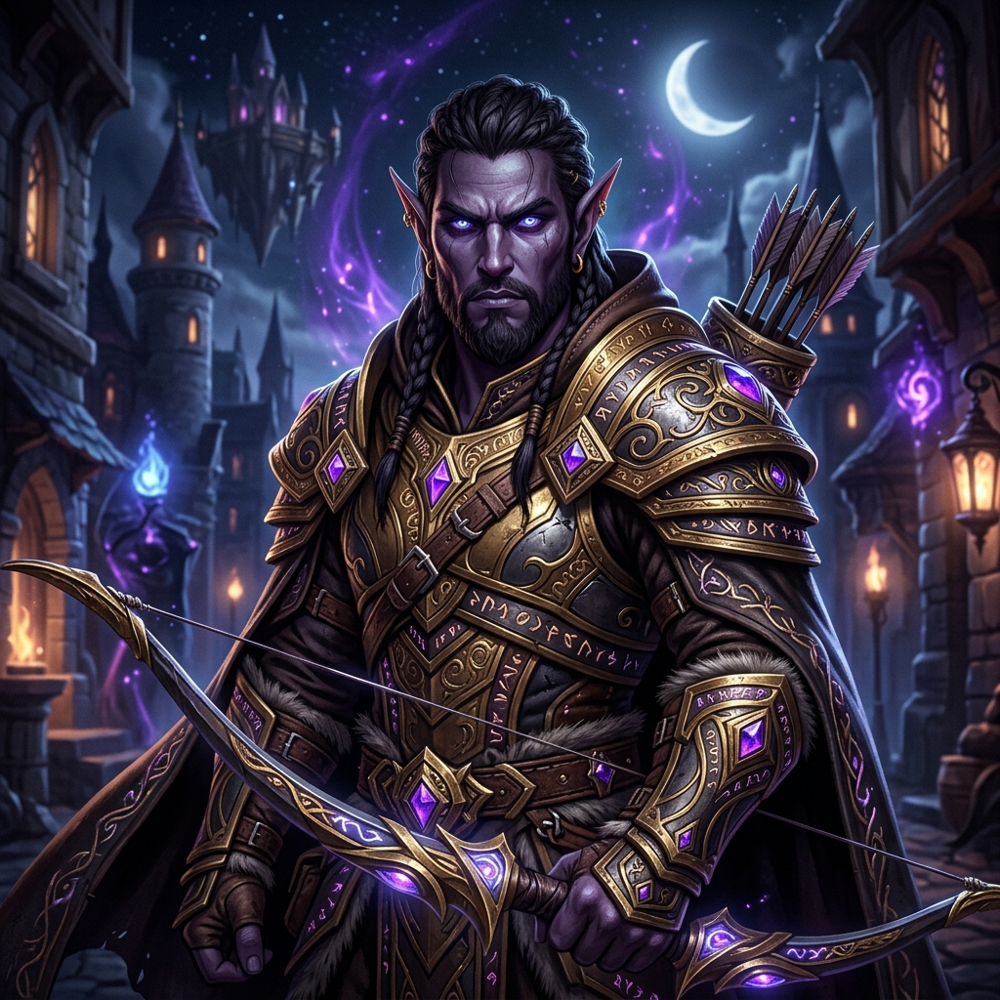
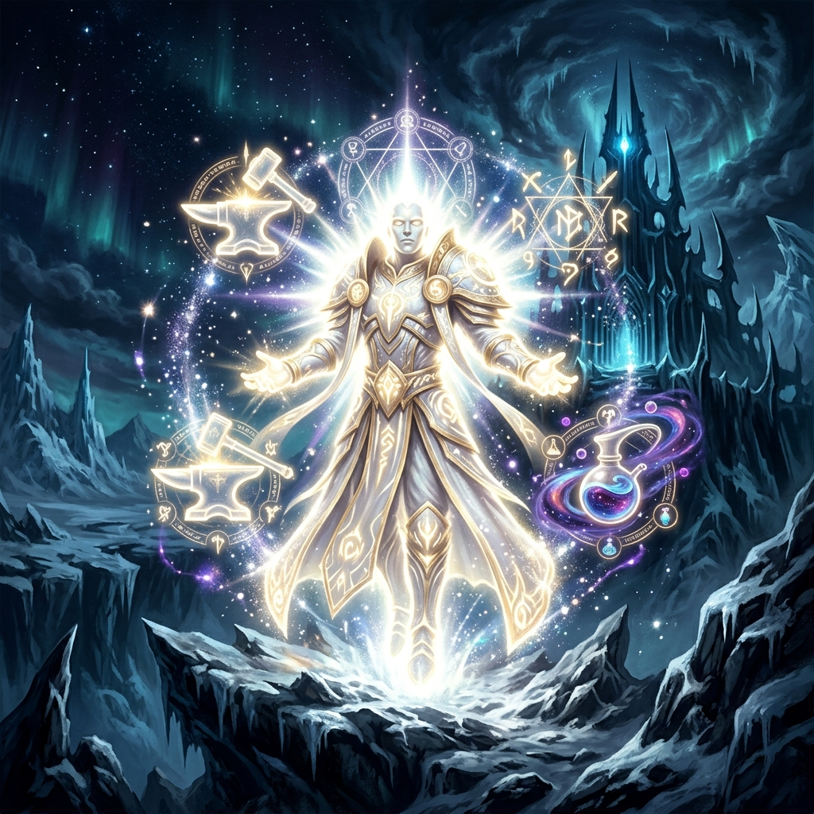
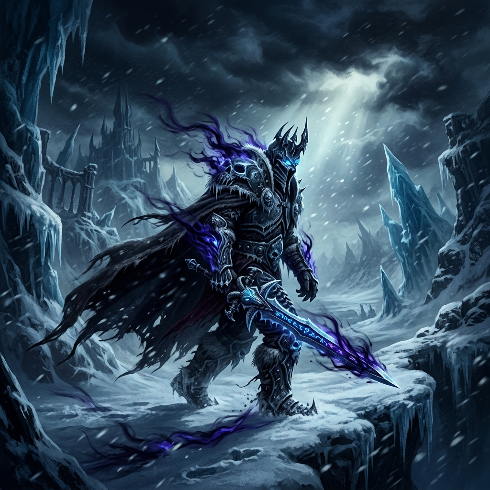
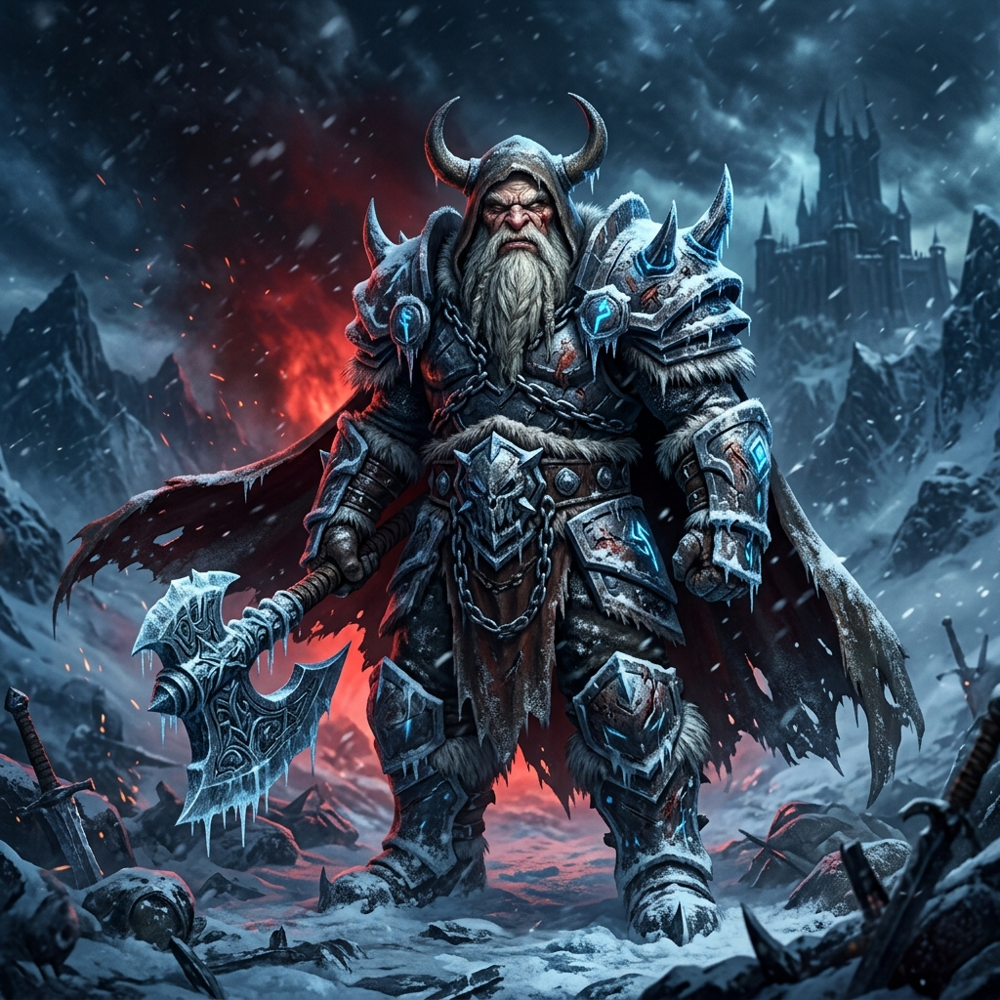

WORLD OF WANOS
EL UNIVERSO FORJADO ENTRE LA ESCARCHA Y EL DESTINO
Los Comandantes del Orden
Líderes activos que dirigen la guerra en Rasganorte y conducen al Panteón hacia ICC 25 Heroico

Morgorotth / Morgott
Cristo Jehová de Wanos (Brujo / DK)
El poder en las sombras y líder supremo activo. Impulsador de la comunidad y deidad viva en Azeroth, avalado por los propios GMs. Comanda las tropas rumbo a ICC 25H.

FranFranco
Dueño de la mitad de Dalaran (Cazador Elfo Oscuro)
El arquero elfo de las riquezas inagotables. Cofinanciador de la cruzada del Panteón. Sus flechas son de acero titanio, y sus arcas nunca se vacían.

Nunurut
El Ser de Luz (Alt-maniac)
Poseedor de 20 almas conjuntas y maestro de todas las profesiones de Azeroth. Su luz ilumina la economía y la autosuficiencia de todo World of Wanos.

Sunreal / Yatala
Namor, El Niño Sin Amor
Caminante errante que busca afecto en los charcos de baba de ICC. Los healers le curan cuando ya corre en fantasma y saca 1 en dados por el BiS, pero sin su sacrificio involuntario el roster se extinguiría.
Panteón de Dioses Antiguos
Deidades fundadoras que forjaron el orden primordial de World OF Wanos. Aunque ya no combaten activamente en Rasganorte, su voluntad cósmica y decretos gobiernan la eternidad de la hermandad.

Bhalanar / Makumbaman
El Creador Cósmico (En el Sueño Eterno)
Líder fundador que concibió y dio vida al Universo Wanos. Ya no empuña armas en el mundo terrenal, pero su presencia vigila desde el vacío cósmico. El Panteón rinde culto eterno a su visión.

Katsurosekai / Kat
El Líder Ancestral Gruñón (Ascendido a la Leyenda)
El guardián de la táctica y el azote de los errores de raid. Sus quejas forjaron el carácter indomable de Wanos. Aunque su voz ya no resuena en vivo, sus enseñanzas guían cada try a 25H.
La Jerarquía del Panteón
El orden inmutable que sostiene el Universo Wanos
Arquitectos originales del Universo Wanos. Ascendidos al reposo cósmico; su voluntad sostiene el Panteón.
Máxima autoridad terrenal y comandante activo de la hermandad en Rasganorte.
Elegidos por su maestría táctica. Lideran las expediciones contra la Plaga.
Guerreros probados que han superado las pruebas del Panteón.
Nuevos reclutas forjando su camino hacia la eternidad.
Las Crónicas de la Conquista
Estado de las campañas contra la Plaga y sus aliados
Rey Exánime (25H)
La cumbre de Rasganorte. Arthas 25N ha sido erradicado por el Panteón; la gloria definitiva exige su caída en modalidad Heroica.
⚔ OBJETIVO PRIMORDIAL: ICC 25HRey Exánime (25N)
El Trono Helado fue purificado. Arthas Menethil sucumbió ante la disciplina de World OF Wanos en raid de 25 jugadores.
✓ EL REY HA CAÍDO (ERRADICADO)Anub'arak
El Rey Araña fue desterrado por el filo del Panteón. Su armadura quedó como trofeo.
✓ ERRADICADOAlgalon
El Observador fue recalibrado. Bhalanar le convenció de no borrar Azeroth del universo.
✓ RECALIBRADOLínea de la Campaña
Ventanales del Vacío
Las Crónicas en Vivo del Panteón — Fase de Frenesí Activa
Buscamos Virtuosos, no Mercenarios
El Panteón convoca almas de valor. ¿Responderás al llamado?
¿Cansado de la frialdad en UltimoWoW? Únete a nosotros en el Nexo de Almas para forjar tu destino. Bhalanar y Morgoroth valoran la lealtad absoluta sobre el Gear Score.
"— Morgoroth, Gran Ejecutor del Panteón
Abre el formulario místico para enviar tu postulación directa a los oficiales en Discord
Los Pilares de la Fe Wana
Los principios inquebrantables del Universo Wanos
Manual de Estrategia
"En la ignorancia nace el wipe; en la enseñanza, la victoria eterna."
- Asistencia a raids obligatoria con aviso previo
- Estudiá los encounters antes de la incursión
- Discord activo durante raids
Código de Acero
"El veneno de la toxicidad será purgado por el filo de la hermandad."
- Cero tolerancia con la toxicidad
- Respeto absoluto entre compañeros
- Los conflictos se resuelven con Bhalanar
Unión de Azeroth
"Un solo guerrero cae, un Universo entero lo levanta."
- Ayuda mutua en progeo de personaje
- Banco de hermandad abierto a Custodios+
- La hermandad por encima del GS
El Reloj de la Eternidad
Los Vigilantes dictan preparación para la conquista de ICC 25 Heroico.
Guías de Sabiduría Wana
Sentencias del Panteón para cada arquetipo de combate
📊 CALCULADORA DE CAPS OBLIGATORIOS (ICC 10/25)
Estadísticas mínimas requeridas por el Panteón para ingresar a raid
🛠️ Addons Recomendados por Katsurosekai
Aportes técnicos gracias a la sabiduría de Katsurosekai. El Kit de Supervivencia definitivo.
DBM
Deadly Boss Mods. (Obligatorio)
Details!
Medidor de daño y sanación.
PallyPower
Gestión de bendiciones.
Omen
Medidor de amenaza (Aggro).
GearScore
Evaluación de equipamiento.
HealBot
Interfaz óptima para sanadores.
👁️ MEJORAS VISUALES Y LOOTEO
Optimiza tu experiencia en Azeroth con nuestro parche visual.
Ofrendas para la Hermandad
Las expediciones de recolección forjan el poder colectivo del Panteón
Recolección
Minería, herbología y desencantamiento para el banco de hermandad.
Custodios+Artesanía
Herrería épica, confección y orfebrería para equipar al Panteón.
Heraldos+Carreras Rápidas
ICC 10/25 heroico. Turnos de geneo para los Iniciados bienvenidos.
Todas las rangos